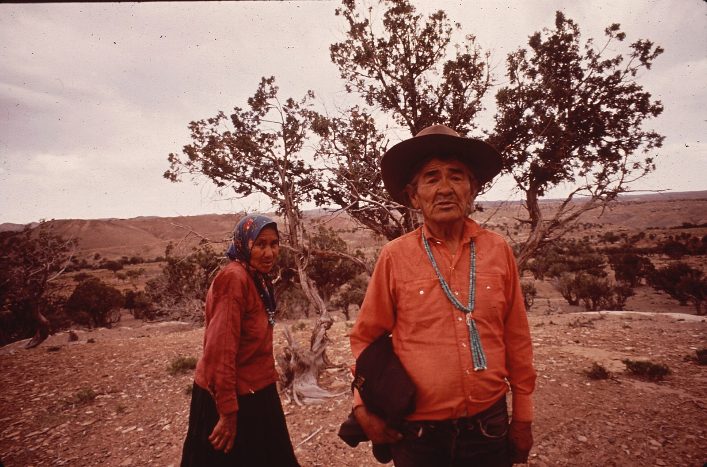

[250년 미국이야기⑤] 원주민 축출과 중남미 개입, 200년 이어진 먼로독트린
잭슨 행정부 이주조약 70건 가까이로 원주민 5만명 가까이 축출
1898~1994년 중남미 정권교체 41건, 트럼프 부칙과 마두로 체포
원주민 사망률 34% 과소집계, 멕시코 진출 한국 기업 100여곳의 관세 셈법
AI경제저널=김갑봉 기자 | 미국 패권을 받친 대륙의 땅과 반구의 세력권은 거저 얻은 것이 아니다. 공장보다 땅이 먼저 있었고, 그 땅에는 먼저 산 사람들이 있었다. 필자는 이 글에서 그 주춧돌이 어떻게 놓였는지 본다.
미국 250년 팽창에는 짙은 그림자가 있다. 안으로는 원주민을 몰아내 대륙을 채웠고, 밖으로는 중남미를 「뒷마당」으로 삼아 반구를 세력권에 뒀다. 그 논리는 박물관에 있지 않다. 2025~26년 국경 장벽과 마약 단속 명분의 관세, 베네수엘라 개입으로 다시 모습을 드러냈다.
유럽인이 닿기 전부터 이 땅에는 원주민이 살았다. 미국이 서쪽으로 뻗을수록 그들은 더 서쪽으로 내몰렸다.
1830년 5월 28일 앤드루 잭슨 대통령이 인디언 강제이주법에 서명했다. 미시시피강 동쪽에 살던 원주민을 서부로 옮기려고 대통령에게 이주조약을 맺을 권한을 준 법이었다(미 국립문서기록관리청).
1832년 3월 연방대법원은 우스터 대 조지아 판결에서 조지아 주법이 체로키 땅에 미치지 않는다고 봤다. 조지아는 따르지 않았고 잭슨은 판결 집행에 나서지 않았다. 갇힌 선교사들은 1833년 주지사 사면으로 풀려났다(미 국립문서기록관리청). 필자는 이 장면을 법보다 팽창이 앞선 순간으로 본다.
축출의 상징으로 남은 장면이 체로키 「눈물의 길」이다. 체로키 정부의 권한 밖에서 움직인 스무 명이 1835년 뉴에코타 조약에 서명했다. 상원은 1836년 비준에 필요한 3분의 2 찬성을 한 표 차로 넘겨 조약을 비준했다(미 국립공원관리청·스미스소니언 미국인디언박물관).
체로키 다수가 조약에 반대하며 떠나지 않았다. 정부는 윈필드 스콧 장군에게 병사와 주 민병대 7000명을 맡겨 이들을 밀어냈다. 1838년 봄 집에서 끌려나온 체로키는 그해 여름부터 가을 사이 길을 떠나 이듬해 3월까지 인디언준주에 닿았고, 대부분 걸어서 수백 마일을 갔다(미 국립공원관리청).
국립공원관리청 개요는 그 길에서 체로키 4000명이 숨졌다고 적는다. 같은 기관의 다른 안내서는 「1000명 이상」으로 적는다. 사망자 추정치는 자료마다 다르다(미 국립공원관리청).
체로키만이 아니었다. 잭슨 행정부는 임기 말까지 이주조약을 70건 가까이 맺었다. 이 조약들로 동부 원주민 5만명 가까이가 인디언준주, 곧 오늘의 동부 오클라호마로 옮겨졌다. 체로키처럼 이송이 잭슨 퇴임 뒤에 이뤄진 경우도 있다.
그렇게 비운 동부 땅 2500만에이커(약 10만㎢)가 백인 정착지로 열렸다. 그 땅 대부분이 남부에 있어 노예제도 함께 넓어졌다(미 국립문서기록관리청).
필자는 축출과 노예제 확대가 같은 땅에서 겹쳤다는 점에 주목한다. 대륙을 채운 팽창의 밑바닥에 이 두 겹의 그늘이 깔렸다고 필자는 본다.
축출은 과거로 끝나지 않았다. 오늘의 통계에도 원주민 격차가 남아 있다. 2020년 인구총조사에서 원주민은 단독으로 370만명, 전체 인구의 1.1%였다. 다른 인종과 겹쳐 세면 970만명이다(미국 인구조사국, 2021년 8월 12일).

2026년 1월 연방관보 공고를 보면 연방이 인정한 원주민 부족은 575개다. 2025년 12월 국방수권법으로 노스캐롤라이나 럼비 부족이 더해졌다. 럼비가 받는 연방 서비스는 부족 명부 확인 등을 조건으로 한다(미 인디언사무국, 2026년 1월 30일).
살림의 격차도 크다. 미 보건복지부 소수자보건국이 인구조사국 미국지역사회조사 2024년 5년 추정으로 정리한 통계가 있다. 비히스패닉 원주민 가구 중위소득은 6만2420달러(약 9257만원)였고, 미국 전체 가구는 8만734달러(약 1억1973만원)였다.
이 연재는 외화를 2026년 상반기 수준인 1달러 1483원으로 환산한다. 원주민 실업률은 8%에 가까워 전체 5%보다 높았다(미 보건복지부 소수자보건국, 2026년 2월 기준 자료).
통계도 이들을 덜 센다. 미 질병통제예방센터 국립보건통계센터가 2026년 1월 낸 사망 통계를 보면, 사망진단서에 인종을 잘못 적은 탓에 원주민 사망률은 실제보다 34% 낮게 잡힌다. 히스패닉과 아시아계는 3%다.
보고서는 이 오기재를 바로잡은 2024년 연령보정 사망률을 냈다. 원주민 남성은 10만명당 1213.0명, 여성은 872.7명이다. 비히스패닉 백인은 남성 871.1명, 여성 646.6명이다(미 국립보건통계센터, 2026년 1월).
이 문제는 오래됐다. 1999~2011년 사망진단서를 설문 자기응답과 대조한 연구에서 원주민 사망자의 인종 오분류율은 40%였다(아리아스·헤론·헤이크스, 2016). 살아 있을 때만이 아니라 통계가 셀 때도 이들은 덜 잡힌다.
필자는 축출이 남긴 상처가 오늘의 소득과 사망률 격차로, 그리고 그 격차를 덜 세는 통계로 이어지고 있다고 본다.
팽창의 눈길은 국경을 넘었다. 1823년 12월 먼로 대통령은 의회에 보낸 연례교서에서 아메리카 대륙을 유럽이 더는 식민지로 삼을 수 없는 곳으로 선언했다. 이 먼로독트린은 뒷날 중남미 개입의 명분으로 거듭 불려 나왔다(미 국립문서기록관리청).
1904년 12월 시어도어 루스벨트 대통령은 연례교서에서 여기에 부칙을 달았다. 중남미가 어지러우면 미국이 국제 경찰처럼 나서겠다는 선언이었다. 다만 먼로독트린은 처음부터 확고한 원칙이 아니었고 시대마다 다시 해석돼 왔다(김봉중, 2016).
20세기 초 미국은 쿠바(1906~09년, 1917~23년)와 아이티(1915~34년), 도미니카공화국(1916~24년)을 군대로 점령했다(존 코츠워스, 2005).
1950년 선거로 뽑힌 아르벤스는 1952년 토지개혁법을 공포했다. 미 국무부 역사실은 대농장을 거느린 미국 유나이티드 프루트가 이 법으로 과테말라의 어느 주체보다 큰 타격을 받으리라 보았다고 적는다. 1954년 미 중앙정보국이 짠 공작 끝에 아르벤스 정부가 무너졌다(미 국무부 역사실·존 코츠워스, 2005).
1973년 칠레에서는 군부가 쿠데타로 아옌데 정부를 무너뜨렸고 피노체트 군사독재가 들어섰다. 미 중앙정보국은 1970년 아옌데 집권을 막으려 했다. 보고서는 중앙정보국이 1973년 쿠데타를 부추기지는 않았지만 1970년에 쿠데타를 꾀한 전력 탓에 용인한 것으로 비쳤을 것이라고 적었다. 쿠데타 뒤 군사정부는 적극 지원했다(미 정보공동체 보고서, 2000년 9월 18일).
미국 정부의 극비 쿠데타 승인 기록을 해당 기업 주가와 맞춘 연구가 있다. 이란·과테말라·칠레 등 미국이 지원한 쿠데타를 보면, 완전 국유화된 기업으로 환산한 평균 누적 초과수익이 극비 승인 뒤 나흘 동안 9%였다(듀브·캐플런·나이두, 2011).
1981~90년 미국은 니카라과에서 반군 콘트라를 지원하며 개입했다. 1898년부터 1994년까지 미국 정부가 중남미에서 정권을 바꾼 사례만 적어도 41건이다. 직접 개입이 17건, 현지 세력을 앞세운 간접 개입이 24건이다(존 코츠워스, 2005).
전 세계로 눈을 넓히면, 한 연구는 1947~89년 미국의 비밀 정권교체 시도를 64건으로 센다(오루크, 2020).
1989년 12월 20일 미군은 「정당한 명분」 작전으로 파나마를 쳤다. 미 육군 기록은 작전 목표로 선거로 뽑힌 엔다라 정부 복원과 마약 혐의를 받던 노리에가 체포를 든다. 전투병력 2만6000명 가까이가 들어갔다. 당시로서는 베트남전 뒤 가장 크고 복잡한 전투작전이었다(미 육군).
마약 혐의가 군사개입의 명분이 된 장면은 37년 뒤 베네수엘라에서 다시 나타난다.
200년 된 논리는 2025년 말 문서에 다시 새겨졌다. 트럼프 행정부가 2025년 11월자로 낸 국가안보전략은 먼로독트린을 다시 세우고 시행해 서반구에서 미국의 우위를 되찾겠다고 못박았다. 문서는 이를 먼로독트린의 「트럼프 부칙」이라 불렀다(백악관, 2025년 11월).
앞선 전략과 견주면 무게중심이 옮겨갔다. 2017년과 2022년 국가안보전략은 중국과 러시아를 상대로 한 강대국 경쟁을 앞세웠다. 2025년 전략은 본토 방어와 서반구를 앞에 놓고 인도태평양의 중국 경쟁을 함께 적었다(미 의회조사국 IF13137, 2025년 12월 18일).
전략은 본토 방어 과제로 대규모 이민과 마약 밀매, 역내 외국 세력의 침투 대응을 적었다. 러시아 경쟁과 유럽 안보의 비중은 줄였다. 미군에는 세계 주둔을 서반구의 급한 위협에 맞게 재조정하라고 주문했고, 유럽에는 스스로 지키라고 했다(미 의회조사국 IF13137, 2025년 12월 18일).
전략은 또 서반구 밖 경쟁국이 이 반구에 군대나 위협 능력을 두거나 전략 핵심 자산을 소유·통제하지 못하게 하겠다고 적었다(백악관, 2025년 11월).
미 전략국제문제연구소(CSIS) 라이언 버그 미주프로그램 국장은 트럼프 부칙을 이 전략의 「아마도 가장 큰 발표」로 꼽았다. 같은 연구소 미주프로그램 에릭 판즈워스 비상근 선임연구원은 미국이 항만 같은 이중용도 전략자산에 중국이 접근하지 못하게 훨씬 공세적으로 나서리라고 분석했다(CSIS, 2025년 12월 10일).
문서는 2026년 1월 행동이 됐다. 1월 3일 미군이 베네수엘라 곳곳을 공습하고 마두로 대통령 부부를 붙잡아 마약테러 혐의로 뉴욕에 넘겼다. 트럼프는 권력 이양 때까지 미국이 베네수엘라를 운영하겠다고 했다(미 의회조사국 IN12618, 2026년 1월 12일).
트럼프는 1월 4일 대통령 전용기에서 콜롬비아를 겨눈 작전을 묻는 기자에게 「내겐 좋게 들린다」고 답했다. 쿠바는 「무너질 준비가 된 것 같다」고 했다.
그 뒤 베네수엘라는 마두로 정부 부통령이던 델시 로드리게스가 권한대행으로 이끌었다. 미국은 베네수엘라 석유를 팔아 그 대금을 미국이 관리하는 계좌에 넣고 권한대행 정부에 내주는 방식을 썼다(미 의회조사국 R49186, 2026년 8월 13일).
미국이 지지한 권한대행 정부와 2015년 선출 국회 사이 대화는 2026년 8월 6일 카라카스에서 첫 회차를 시작했다. 야권 지도자 마차도와 곤살레스 우루티아는 참여하지 않았다(미 의회조사국 R49186, 2026년 8월 13일).
9월 22일 트럼프는 뉴욕 유엔총회 기간에 로드리게스를 비공개로 만났다.
10월 14일 미 재무부 해외자산통제실은 로드리게스 권한대행의 오빠인 호르헤 로드리게스 국회의장을 제재 명단에서 뺐다(미 재무부, 2026년 10월 14일).
10월 26일 미 국무부 고위 당국자가 선거 일정의 얼개를 설명했다. 12월 중순까지 대법원을 새로 꾸리고 곧이어 새 국가선거관리위원회를 세운다. 그 뒤 로드리게스가 대통령직 궐위를 선언하면 6개월 안에 선거를 치른다. 선거 날짜는 정하지 않았다(미 국무부, 2026년 10월 26일).
11월 2일 루비오 국무장관은 올리버 블랑코 베네수엘라 외교장관을 국무부에서 만났다. 루비오는 안정화, 경제 회복과 정치 화해, 민주 이행으로 짠 트럼프 대통령의 3단계 계획을 다시 확인했다(미 국무부, 2026년 11월 2일).
11월 13일 카라카스에서 권한대행 정부와 2015년 선출 국회 대표단이 넷째 대화에 들어갔다. 정부 측은 이번 회차 의제를 공개하지 않았다. 마차도는 이번에도 협상에 직접 참여하지 않는다.
국무부는 이 과정을 베네수엘라가 이끄는 화해 대화라고 부른다. 필자는 그런데도 선거의 순서와 시한이 워싱턴 발표로 먼저 공개되는 이 구도를, 먼로독트린이 말하던 반구 관리가 200년 뒤 되풀이된 장면으로 본다.
안으로는 트럼프 대통령이 2025년 1월 20일 취임 첫날 남부 국경에 국가비상사태를 선포하고 장벽 등 물리적 방벽을 더 세우라고 명했다. 2월 1일에는 불법 이민과 마약 유입을 이유로 멕시코산 물품에 25% 관세를 매기는 행정명령에 서명했다. 근거 법률은 국제비상경제권한법이었다(포고 1만886호·행정명령 1만4194호).
2025년 3월 개정 명령으로 미국·멕시코·캐나다 협정에 따라 무관세로 들어오는 멕시코산 물품은 이 관세에서 빠졌다(행정명령 1만4232호, 2025년 3월 6일).
이 법을 근거로 한 관세는 법정에서 제동이 걸렸다. 연방대법원은 2026년 2월 20일 6대3으로 국제비상경제권한법이 대통령에게 관세 부과 권한을 주지 않는다고 판결했다. 다툰 관세에는 마약 밀매를 이유로 한 관세도 들어 있었다. 이 판결로 멕시코산 물품에 매긴 25% 관세는 근거를 잃었다(연방대법원 러닝리소시스 대 트럼프 판결).
한국에도 남의 일이 아니다. KOTRA가 2024년 7월 정리한 자료를 보면 멕시코에서 자동차와 부품을 생산하는 한국 기업은 100여곳이다. 2006~2023년 누적 기준 한국 기업의 멕시코 외국인직접투자는 84%가 제조업이고, 그 가운데 절반 이상이 자동차와 부품 제조다.
KOTRA는 멕시코 자동차 시장의 약점으로 수출의 80% 이상이 미국으로 가 미국 경제 의존도가 높다는 점을 꼽았다(KOTRA 멕시코시티무역관, 2024년 7월 9일). 국경과 마약을 이유로 한 관세는 멕시코에 생산 기지를 둔 한국 기업에도 닿는 문제였다.
필자는 이 팽창이 남긴 유산을 이중적으로 본다. 대륙 국가라는 지리와 자원은 미국 패권의 큰 밑천이 됐고, 힘으로 거두는 문법은 나라의 습관이 됐다.
필자는 흥망이 거두는 기능과 되돌려주는 기능의 균형이 무너질 때 온다고 본다. 이 글의 기록은 거두는 쪽에 기울어 있다. 대륙의 땅과 반구의 세력권을 거둔 뒤 원주민에게는 보호구역과 살림의 격차가, 중남미에는 개입의 기억이 남았다.
잭슨 임기에 맺은 이주조약 70건 가까이로 원주민 5만명 가까이가 서부로 내몰렸고 동부 2500만에이커가 열렸다. 오늘 원주민 가구 중위소득은 미국 전체 가구보다 낮고, 사망률 통계는 원주민 죽음을 34% 덜 센다.
미국의 중남미 개입은 과테말라와 칠레, 파나마를 거쳐 2026년 베네수엘라로 이어졌다. 그 명분으로 먼로독트린이 거듭 불려 나왔다. 필자는 대륙을 삼킨 힘의 논리가 국경과 마약, 개입의 이름으로 오늘도 작동한다고 본다.
갈림길은 가깝다. 12월 중순 베네수엘라 새 대법원이 꾸려지는지, 로드리게스가 궐위를 선언하고 선거 날짜가 잡히는지가 첫 시험대다. 선거의 시한을 끝내 누가 정하는지가 되살아난 먼로독트린의 무게를 가늠할 잣대다.
(이 연재는 단행본으로 준비 중인 『250년 미국이야기』 원고를 AI경제저널에 맞게 고쳐 싣는다. 베네수엘라 대목은 2026년 11월 13일까지의 기록이다.)
참고문헌
- 아린드라짓 듀브(Arindrajit Dube)·이선 캐플런(Ethan Kaplan)·수레시 나이두(Suresh Naidu), "Coups, Corporations, and Classified Information", 『The Quarterly Journal of Economics』 126권 3호, 1375~1409쪽, 2011년. DOI 10.1093/qje/qjr030. https://doi.org/10.1093/qje/qjr030
- 린지 오루크(Lindsey A. O'Rourke), "The Strategic Logic of Covert Regime Change: US-Backed Regime Change Campaigns during the Cold War", 『Security Studies』 29권 1호, 92~127쪽, 2020년. DOI 10.1080/09636412.2020.1693620. https://doi.org/10.1080/09636412.2020.1693620
- 김봉중, 「먼로독트린의 변용: 파나마회의와 '명백한 운명' 시기를 중심으로」, 『미국사연구』 43집, 81~117쪽, 한국미국사학회, 2016년. https://www.kci.go.kr/kciportal/ci/sereArticleSearch/ciSereArtiView.kci?sereArticleSearchBean.artiId=ART002113398
- 존 코츠워스(John H. Coatsworth), "United States Interventions: What For?", 『ReVista: Harvard Review of Latin America』 4권 2호, 2005년 5월 15일. https://revista.drclas.harvard.edu/united-states-interventions/
- 미 국립보건통계센터(NCHS), 자쿠안 쉬(Jiaquan Xu) 외, "Mortality in the United States, 2024", 『NCHS Data Brief』 548호, 2026년 1월 29일. https://www.cdc.gov/nchs/products/databriefs/db548.htm · 엘리자베스 아리아스(Elizabeth Arias)·멜로니 헤론(Melonie Heron)·잔 헤이크스(Jahn K. Hakes), "The Validity of Race and Hispanic-origin Reporting on Death Certificates in the United States: An Update", 『Vital and Health Statistics』 Series 2, No. 172, 2016년 8월. https://www.cdc.gov/nchs/data/series/sr_02/sr02_172.pdf
- 라이언 버그(Ryan C. Berg) 외, "Experts React: The NSS and Washington's New Approach to the Western Hemisphere", 미 전략국제문제연구소(CSIS), 2025년 12월 10일. https://www.csis.org/analysis/experts-react-nss-and-washingtons-new-approach-western-hemisphere
- 미 의회조사국(CRS), "National Defense Strategy: Potential Implications for DOD of Prioritizing the Western Hemisphere and China", IF13137, 2025년 12월 18일 · "U.S. Capture of Venezuela's Nicolás Maduro: Considerations for Congress", IN12618, 2026년 1월 12일 개정 · "Venezuela's Post-Maduro Political Transition and U.S. Policy", R49186, 2026년 8월 13일. https://www.everycrsreport.com/reports/IF13137.html · https://www.everycrsreport.com/reports/IN12618.html · https://www.everycrsreport.com/reports/R49186.html
- 눈물의 길 공공기록: 미 국립공원관리청(NPS), 「Trail of Tears」 개요 · 「A Trail of Tragedy」 안내서 · 「Trail of Tears National Historic Trail」 큰글씨 안내문. https://www.nps.gov/articles/trailoftears.htm · https://home.nps.gov/trte/learn/historyculture/upload/A-Trail-of-Tragedy-508.pdf · https://www.nps.gov/trte/planyourvisit/upload/National-Park-Service-Large-Print-Text-of-Trail-of-Tears-Brochure-508.pdf · 스미스소니언 미국인디언박물관(National Museum of the American Indian), "Treaty of New Echota", 2019년 4월 24일. https://www.smithsonianmag.com/blogs/national-museum-american-indian/2019/04/24/treaty-new-echota/
- 미 국립문서기록관리청(National Archives), 「President Andrew Jackson's Message to Congress 'On Indian Removal'」 · 「Monroe Doctrine (1823)」 · 「Theodore Roosevelt's Corollary to the Monroe Doctrine (1905)」 해설(1904년 12월 6일 연례교서 전사본 포함), 『Milestone Documents』 · 「Worcester v. Georgia 판결 명령서」(1832년 3월 3일), DocsTeach. https://www.archives.gov/milestone-documents/jacksons-message-to-congress-on-indian-removal · https://www.archives.gov/milestone-documents/monroe-doctrine · https://www.archives.gov/milestone-documents/roosevelt-corollary · https://www.docsteach.org/document/worcester-v-georgia-mandate/
- 원주민 통계 공공기록: 미국 인구조사국(Census Bureau), 니컬러스 존스(Nicholas Jones) 외, "2020 Census Illuminates Racial and Ethnic Composition of the Country", 2021년 8월 12일. https://www.census.gov/library/stories/2021/08/improved-race-ethnicity-measures-reveal-united-states-population-much-more-multiracial.html · 미 보건복지부 소수자보건국(Office of Minority Health), "American Indian and Alaska Native Health", 미국지역사회조사 2024년 5년 추정(2026년 2월 기준 자료, 비히스패닉 기준). https://minorityhealth.hhs.gov/american-indian-and-alaska-native-health · 미 인디언사무국(Bureau of Indian Affairs), "Indian Entities Recognized by and Eligible To Receive Services From the United States Bureau of Indian Affairs", 『Federal Register』 91권 4102쪽, 2026년 1월 30일. https://www.federalregister.gov/documents/2026/01/30/2026-01899/indian-entities-recognized-by-and-eligible-to-receive-services-from-the-united-states-bureau-of
- 미 국무부(U.S. Department of State), 역사실 『Foreign Relations of the United States, 1952–1954, Guatemala』 해설 · 「Senior State Department Official on Venezuela」, 2026년 10월 26일 · 「Secretary Rubio's Meeting with Venezuelan Foreign Minister Blanco」, 2026년 11월 2일. https://history.state.gov/historicaldocuments/frus1952-54Guat/intro · https://www.state.gov/releases/office-of-the-spokesman/2026/10/senior-state-department-official-on-venezuela/ · https://www.state.gov/releases/office-of-the-spokesman/2026/11/secretary-rubios-meeting-with-venezuelan-foreign-minister-blanco/
- 미 재무부 해외자산통제실(OFAC), 「Venezuela-related Designation Removal」, 2026년 10월 14일. https://ofac.treasury.gov/recent-actions/20261014
- 섀넌 슈월러(Shannon Schwaller), "Operation Just Cause: the Invasion of Panama, December 1989", 미 육군, 2008년 11월 17일. https://www.army.mil/article/14302/operation_just_cause_the_invasion_of_panama_december_1989
- 미 정보공동체(Intelligence Community), 「CIA Activities in Chile」(힌치 수정조항 보고서), 2000년 9월 18일. https://irp.fas.org/cia/product/chile/index.html
- 백악관(The White House), 「National Security Strategy of the United States of America」, 2025년 11월 · 미 대통령, 「Proclamation 10886」(2025년 1월 20일) · 「Executive Order 14194」(2025년 2월 1일) · 「Executive Order 14232」(2025년 3월 6일). https://www.whitehouse.gov/wp-content/uploads/2025/12/2025-National-Security-Strategy.pdf · https://www.whitehouse.gov/presidential-actions/2025/01/declaring-a-national-emergency-at-the-southern-border-of-the-united-states/ · https://www.federalregister.gov/documents/2025/02/07/2025-02407/imposing-duties-to-address-the-situation-at-our-southern-border · https://www.federalregister.gov/documents/2025/03/11/2025-03991/amendment-to-duties-to-address-the-flow-of-illicit-drugs-across-our-southern-border
- 미 연방대법원, 『Learning Resources, Inc. v. Trump』, 2026년 2월 20일. https://www.supremecourt.gov/opinions/25pdf/24-1287_4gcj.pdf
- KOTRA 멕시코시티무역관(박주영), "2024년 멕시코 자동차 및 자동차부품 산업 정보", 『해외시장뉴스』, 2024년 7월 9일. https://dream.kotra.or.kr/kotranews/cms/news/actionKotraBoardDetail.do?SITE_NO=3&MENU_ID=200&CONTENTS_NO=1&bbsGbn=403&bbsSn=403&pNttSn=216941
- 알자지라(Al Jazeera), 에린 헤일(Erin Hale), "Trump threatens Colombia's Petro, says Cuba looks 'ready to fall'", 2026년 1월 5일. https://www.aljazeera.com/news/2026/1/5/trump-threatens-colombias-petro-says-cuba-looks-like-its-ready-to-fall
- 머코프레스(MercoPress), "Delcy Rodríguez calls her meeting with Trump historic and thanks him for his support", 2026년 9월 23일. https://en.mercopress.com/2026/09/23/delcy-rodriguez-calls-her-meeting-with-trump-historic-and-thanks-him-for-his-support
- 엘디아리오(El Diario), 베네수엘라 넷째 대화 개시 보도, 2026년 11월 13일. https://eldiario.com/2026/11/13/cuarta-ronda-dialogo-venezuela/
사진 출처
- [사진1] 테리 아일러(Terry Eiler), 「ARIZONA--NAVAJO NATION」, 1972년 5월, 미 환경보호청 도큐메리카(DOCUMERICA) 사업, 미국 국립문서기록관리청 소장(기록군 412, 자료번호 544404, 412-DA-1911), 공공영역. 위키미디어 공용 게재본. https://commons.wikimedia.org/wiki/File:ARIZONA-NAVAJO_NATION_-_NARA_-_544404.jpg
- [사진2] 미 육군(U.S. Army), 「Over the wall and through the breech」, 「Operation Just Cause: the Invasion of Panama, December 1989」 기사(2008년 11월 17일 게재) 사진, 사진 제공 미 육군, 촬영일 표기 없음, 미 연방정부 저작물 공공영역. https://www.army.mil/article/14302/operation_just_cause_the_invasion_of_panama_december_1989 · 원본 https://api.army.mil/e2/c/-images/2008/12/14/25694/army.mil-25694-2008-12-16-121217.jpg
관련기사
- [250년 미국이야기①] 역사의 저울로 미국 250년을 잰다
- [250년 미국이야기②] 석유로 선 미국 250년, 다섯 축이 한자리에서 꺾인다
- [250년 미국이야기③] 미국 유럽 러시아 중국의 250년, 세계 생산의 저울은 두 번 기울었다
- [250년 미국이야기④] 천조국 패권의 일곱 기둥과 무너진 제조업
저작권자 © AI경제저널 무단전재 및 재배포, AI학습 및 활용 금지